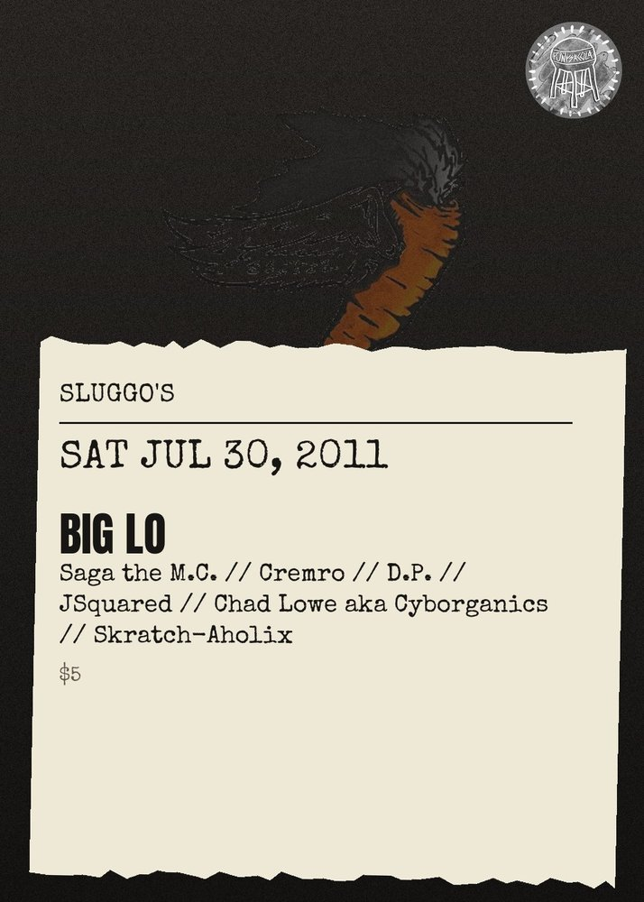

SAT JUL 30from the archive
Big Lo, Saga The Emcee, CremRo Smith, D.P., Jsquared, Cyborganics, Skratch-Aholix
cover was $5
all ages
This month features Big Lo, Saga the M.C., Cremro (Orlando), D.P. (Gainesville), JSquared, and Chad Lowe aka Cyborganics. Also, the almost world famous Skratch-Aholix will be holding down the 1's and 2's all night long. This show is going to be crazy so make sure you let all your people know about it. All ages are welcome but you must be 21 to enjoy alcoholic beverages and it's only 5 bucks at the door!